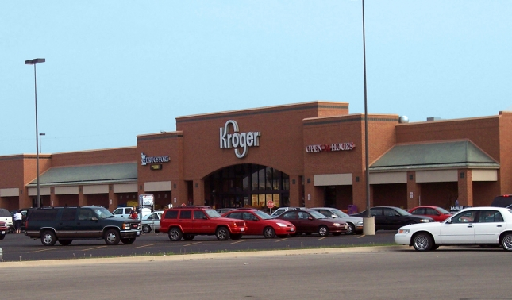
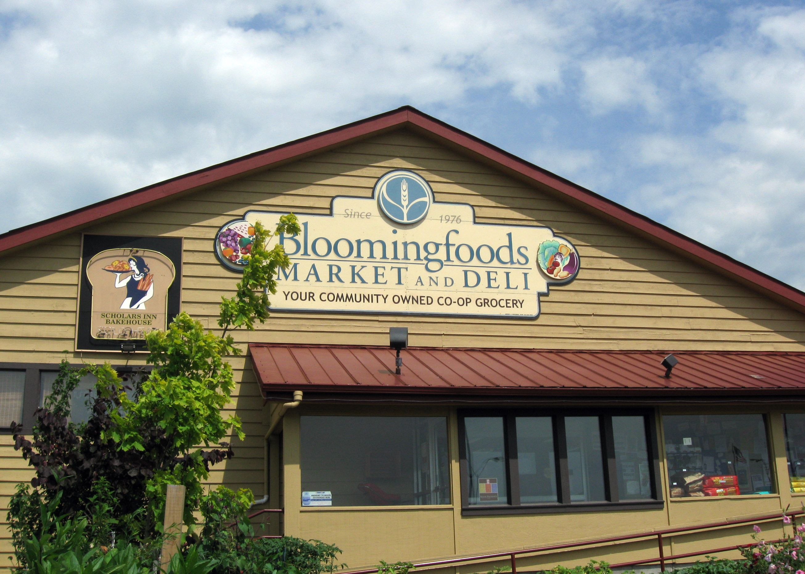
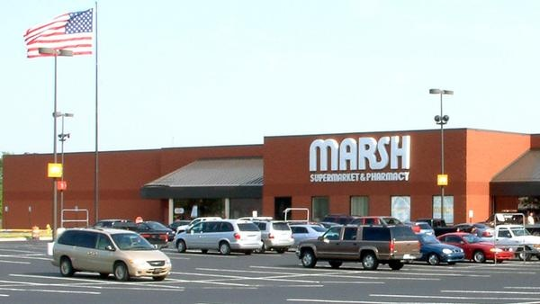
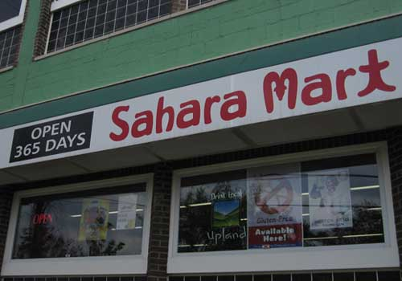
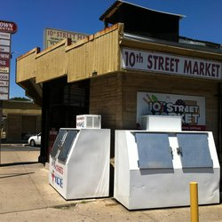
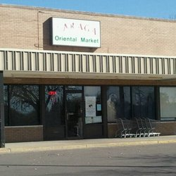
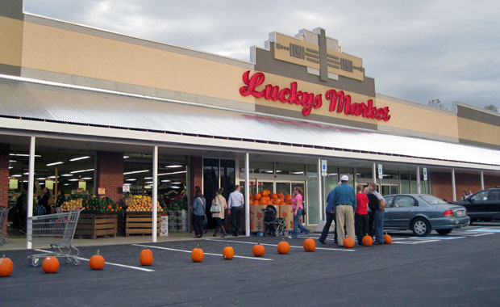
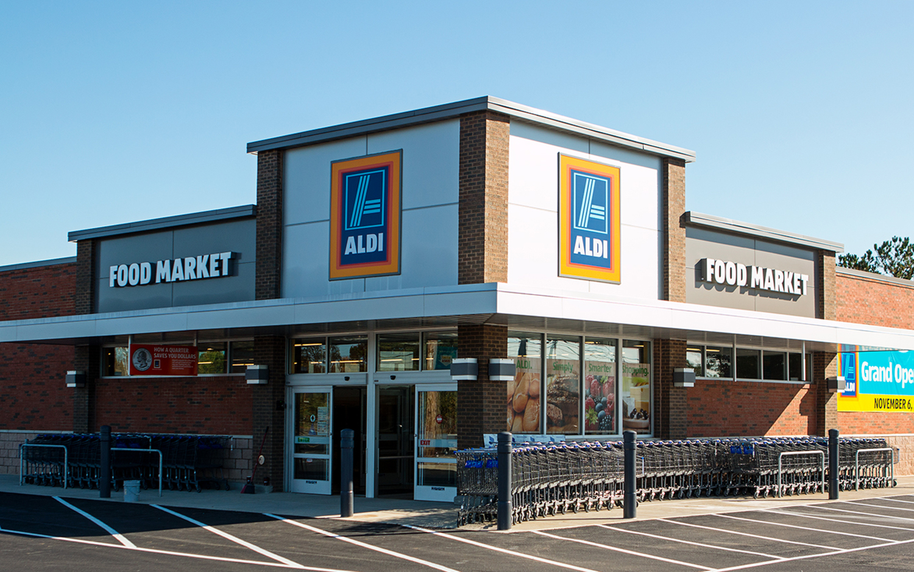
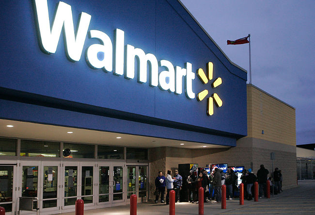
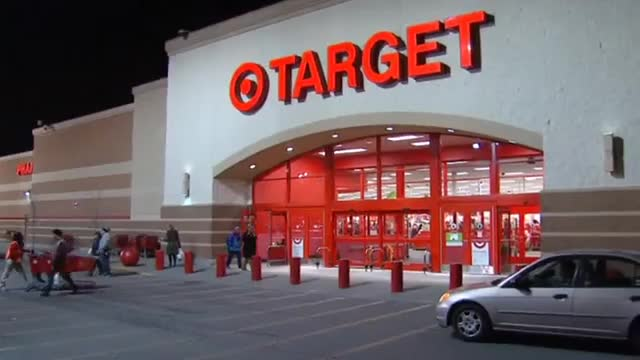

Kroger
The Kroger Company is an American retailer founded by Bernard Kroger in 1883 in Cincinnati, Ohio. It is the country's largest supermarket chain by revenue, second-largest general retailer, and twenty-third largest company. In Bloomington Kroger is one of the best options for grocery shopping and is a top favourtie among the students because of its discounts and deals on all grocery sections. Visit their website here.

Bloomingfoods Market & Deli
Bloomingfoods has been a community-owned business since 1976. It has many branches in Bloomington and is well known for its fresh quality products. It is a market for local, organic and healthy products, meeting the needs of consumers and producers. Visit their website here.

Marsh Supermarket
Marsh Supermarkets is a retail food chain headquartered in Indianapolis, Indiana, with stores throughout Central Indiana and parts of Ohio (including metropolitan Cincinnati). It has good locations situated near most housing apartments. In Bloomington they have two well known branches offering fresh produce. Visit their website here.

Sahara Mart
Sahara Mart is a family owned and operated grocery with a range of products from the exotic to the ordinary. It has two branches in Bloomington and students often visit the stores for buying international and organic foods. Visit their website here.

Tenth Street Market & Deli
Tenth Street Market & Deli is one of the most famous stores for providing international foods in Bloomington. It has a fantastic location right in the middle of the campus and thus attracts many students from all backgrounds. It is a favourite among Indian students since it has almost all the indian products that the students need.

Saraga Oriental Market
Saraga is an asian grocery store located at College Mall. Its location makes it one of the popular stores among asians.

Lucky's Market
Lucky's market specializes in natural and organic food at affordable rates. Although it is far from campus, it still attracts customers due to its quality in food that they provide. Check out their website here.

ALDI
ALDI is one of the best supermarkets for getting huge discounts and saving some bucks. It is far from campus, but makes up for it due to its good quality products at very affordable rates. Check out their website here.

Walmart Supercenter
Walmart in Bloomington is a total store having all the groceries and a wide variety of products. They have sales going on many times of the year which is beneficial to many students. Check out their website here.

Target
Target is another retail chain which offers groceries, home goods, clothing, electronics and more. Located in College Mall, it is one of the more famous stores in Bloomington. Check out their website here.